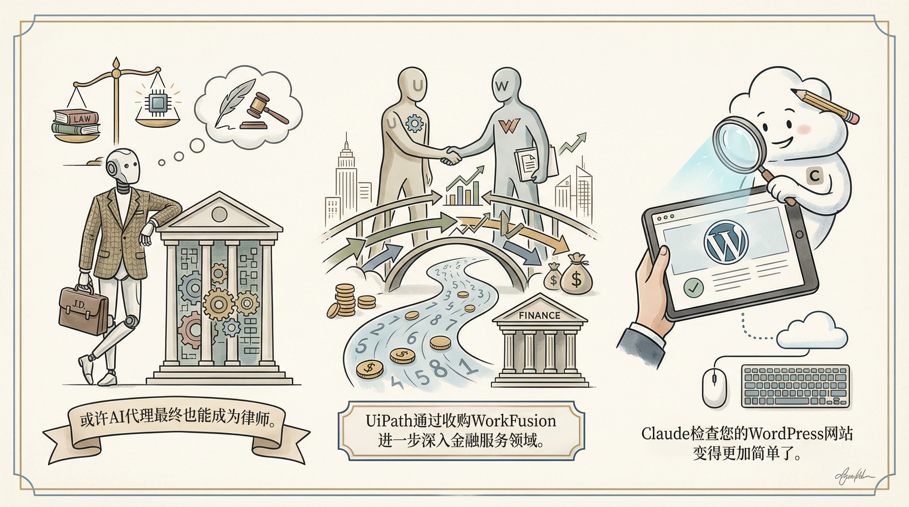

OpenAI首款硬件产品Dime曝光，预计今年发售，为AI音频耳机。
两克伴AIGC日报
2026-02-07 星期六

本期关注：OpenAI推出AI音频耳机Dime及企业级代理工具Frontier，多智能体编排工具Crew优化AI协作开发，AI基因组分析成功挽救生命案例凸显医疗潜力，同时Moltbook数据泄露暴露AI代理社交网络风险。
📰 行业动态
OpenAI推出企业级AI代理构建与管理工具，助力企业AI应用。
OpenAI发布Frontier平台，帮助企业构建、部署和监督AI代理。
🔥 今日焦点
Crew是一款由开发者gl2334创建的多代理编排工具，旨在协助管理多个AI代理在同一代码库上的协同工作。该工具具备两种模式：设计模式和Crew模式。设计模式通过自动化的作者与审阅者循环，将想法精炼成完善的设计文档；而Crew模式则允许运行并行AI代理（如QA、DEV、JANITOR），以实现代码的持续改进。
Crew工具的重要性在于，它为AI辅助开发提供了一个高效的管理平台，能够优化AI代理之间的协作流程，提高开发效率。在当前AI技术飞速发展的背景下，Crew的出现对AI领域具有深远影响。它不仅有助于推动AI在软件开发领域的应用，还能促进多智能体系统的进一步发展，为未来智能化的软件开发提供有力支持。
2024年，一位用户在Reddit上分享了自己的经历：他通过测序自己的DNA，并利用先进的AI模型对基因组进行分析，成功发现了个性化的健康建议，从而挽救了自己的生命。该用户首先尝试了基础的DNA查询，但得到的建议过于泛泛。随后，他决定利用最新的AI模型Opus 4.5和GPT 5.2 Pro，构建了一个分析流程。顶级模型负责设计方法和工具，而Nvidia DGX Spark上的本地LLM则对基因组进行了约48小时的分析。这一创新实践不仅展示了AI在个性化医疗领域的巨大潜力，也揭示了AI在基因分析中的强大能力。这一案例对AI领域的影响深远，它证明了AI在处理复杂数据、提供精准医疗建议方面的巨大价值，为AI在医疗健康领域的应用提供了新的思路和方向。
---
Moltbook，一款专为AI代理设计的社交网络，近期曝光了真实人类的数据。这一事件引发了广泛关注，不仅揭示了AI领域数据安全与隐私保护的严峻挑战，也凸显了人工智能技术在实际应用中可能带来的潜在风险。
Moltbook的泄露事件表明，在AI技术快速发展的背景下，数据安全与隐私保护已成为亟待解决的问题。AI系统在收集、处理和分析数据时，若缺乏有效的监管和防护措施，极易导致用户隐私泄露。这不仅损害了用户的权益，也可能对整个AI行业的发展造成负面影响。
📚 深度长文
在《You Spent Your Whole Life Getting Good at the Wrong Thing》一文中，作者Alberto Romero深入探讨了人工智能代理的内在机制和发展趋势。文章的核心观点是，人类在追求技能提升的过程中，往往忽视了真正重要的能力培养，而这些能力对于应对未来人工智能的发展至关重要。
文章通过多个关键论据来支撑其观点。首先， Romero指出，传统的教育体系往往过于注重知识灌输和技能训练，而忽略了创造性思维和问题解决能力的培养。这些能力在人工智能时代变得尤为珍贵，因为它们是人工智能难以复制的。其次，文章分析了人工智能的发展历程，指出尽管人工智能在某些领域取得了显著进步，但其在理解复杂情境、进行道德判断和情感交流等方面仍存在局限。
Waymo与DeepMind携手打造世界模型，基于Genie 3技术，旨在让自动驾驶系统具备“脑补”罕见场景的能力。文章深入探讨了这一创新技术的核心观点，即通过深度学习与强化学习相结合，使自动驾驶汽车能够更好地理解和预测复杂环境中的未知因素。
文章指出，Genie 3模型在处理罕见场景时展现出卓越性能，其关键论据包括：模型能够有效识别并处理罕见事件，如极端天气、施工区域等；通过不断学习，模型能够持续优化其预测能力，提高自动驾驶系统的安全性。
《人形机器人的真机强化学习！ICLR 2026 通研院提出人形机器人预训练与真机微调新范式》一文由机器之心撰写，深入探讨了人形机器人领域的前沿技术。文章核心观点在于，通过引入预训练与真机微调的新范式，有效提升了人形机器人的学习效率和性能。
文章指出，传统的强化学习方法在训练人形机器人时存在效率低下、稳定性差等问题。为此，通研院提出了人形机器人预训练与真机微调的新范式。该范式首先在虚拟环境中对人形机器人进行预训练，使其具备一定的运动能力和环境感知能力；随后，将预训练后的机器人转移到真实环境中进行微调，进一步优化其性能。
📄 重点论文
**核心贡献**: 提出了一种新的文档结构感知推理方法，用于增强智能体搜索，通过利用文档的层次结构和顺序信息，提高了检索增强生成（RAG）的性能。
**与AI Agent的关联**: 该研究为智能体搜索提供了新的思路，有助于提高智能体在复杂环境中的搜索效率和决策质量。
**核心贡献**: 通过PieArena，一个基于MBA谈判课程的谈判基准，评估了大型语言模型在谈判任务中的表现，揭示了AGI级性能和新的行为差异。
**与AI Agent的关联**: 该研究为智能体在复杂谈判场景中的应用提供了新的证据，有助于推动智能体在商业领域的应用。
**核心贡献**: 提出了一种名为ProAct的框架，通过两阶段训练范式，使智能体能够内化准确的展望推理，从而提高在交互式环境中的长期规划能力。
**与AI Agent的关联**: 该研究为智能体在交互式环境中的长期规划提供了新的方法，有助于提高智能体的适应性和决策质量。
🛠️ 产品推荐
Empusa是一款视觉调试工具，旨在捕捉并恢复AI代理的重试循环问题。针对自主代理（如OpenClaw/ReplyX）在执行过程中可能出现的“僵尸循环”问题，Empusa通过可视化方式展示日志，帮助用户快速定位并解决API信用消耗过快的问题。该工具基于Next.js构建，为技术从业者提供便捷的调试体验，有效提升AI代理的稳定性和效率。
---
Show HN: GTM MCP Server是一款基于AI的Google Tag Manager容器管理工具。该产品通过连接Claude和ChatGPT等AI模型与Google Tag Manager API，实现通过自然对话创建标签、触发器、变量、审计容器并发布更改。它简化了GTM操作流程，提高了管理效率，尤其适用于技术从业者。GTM MCP Server的创新之处在于其AI能力，让用户无需繁琐操作即可轻松管理GTM容器。
---
MicroClaw是一款基于Rust语言开发的Telegram智能助手，致力于为用户提供高效便捷的AI服务。该产品通过整合先进的Agentic AI技术，实现了对用户指令的快速响应和智能处理。MicroClaw能够帮助用户轻松完成日常任务，提高工作效率，有效解决信息过载、操作繁琐等问题。作为一款AI助手，MicroClaw在技术上具有创新性，能够为技术从业者带来全新的使用体验。